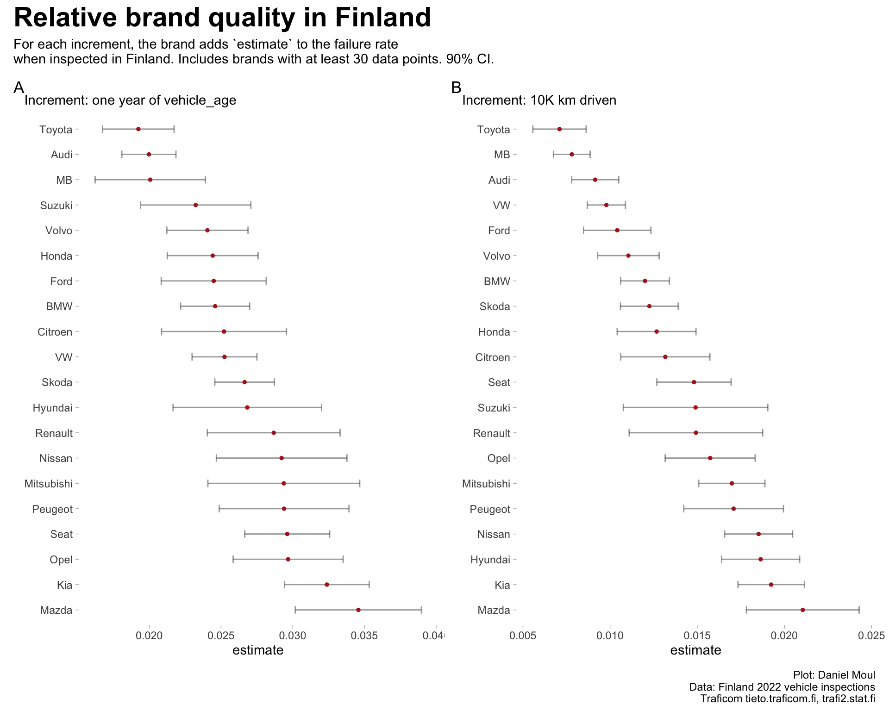

Because failure_rate is influenced by distance driven and vehicle age (see Section A.1.2 Causal graph), a simple list of average failure rates by brand (Table 3.1) can be misleading. For example:
Brands with relatively more vehicles in older models years will have “unfairly” higher failure rates.
The lowest quality vehicles may be withdrawn from service relatively earlier than higher quality cars, “unfairly” reducing the lowest quality brands’ failure rates.
If brands mostly offer expensive sports cars that are driven less than average, then these brands will have “unfairly” low failure rates.
Show the code
##| column: page-rightdata_for_model |>summarize(avg_failure_rate =weighted.mean(failure_rate, w = inspection_count),model_years_in_data =paste0(min(model_year), "-", max(model_year)),.by = brand) |>arrange(avg_failure_rate) |>mutate(rank =rank(avg_failure_rate)) |>gt() |>tab_header(md("**Brands ranked by average failure rate over all model years**")) |>fmt_number(columns = avg_failure_rate,decimals =2)
Table 3.1: Brands ranked by average failure rate (not a fair ranking)
Brands ranked by average failure rate over all model years
brand
avg_failure_rate
model_years_in_data
rank
Porsche
0.09
2007-2018
1
Lexus
0.11
2007-2017
2
Suzuki
0.13
2007-2018
3
Toyota
0.13
2007-2018
4
Audi
0.14
2007-2018
5
Mini
0.15
2007-2018
6
Seat
0.16
2007-2018
7
Skoda
0.16
2007-2018
8
Honda
0.16
2007-2018
9
Tesla Motors
0.16
2015-2017
10
Mitsubishi
0.17
2007-2018
11
Volvo
0.17
2007-2018
12
VW
0.19
2007-2018
13
Opel
0.20
2007-2018
14
Subaru
0.21
2007-2018
15
Hyundai
0.21
2007-2018
16
Ford
0.21
2007-2018
17
BMW
0.22
2007-2018
18
MB
0.22
2007-2018
19
Kia
0.23
2007-2018
20
Jaguar Land Rover
0.23
2007-2017
21
Mazda
0.24
2007-2018
22
Nissan
0.27
2007-2018
23
Peugeot
0.28
2007-2018
24
Dacia
0.29
2010-2018
25
Renault
0.29
2007-2018
26
Citroen
0.30
2007-2018
27
Alfa Romeo
0.30
2007-2017
28
Fiat
0.31
2007-2017
29
3.2 Linear regressions
If we accept that inspection failure rate is a good proxy for brand quality, it’s possible to identify relative brand quality by accounting for these factors using regression analysis.
Regressing with vehicle_age provides a better fit than median_km_driven_10K
Relatively higher \(R^2\) and log likelihood
Relatively lower AIC and BIC
This is because vehicle_age encompasses failures due to age as well as a lot of the information about distance driven. See Section A.1.2 Causal graph and Table 1.3 High correlation among vehicle_age, median_km_driven and average_km_driven.
For each brand separately, I calculated lm(failure_rate ~ vehicle_age) and lm(failure_rate ~ median_km_driven_10K) and present them in Figure 3.1. I excluded brands that did not have at least 30 data points.
Given the wide range of the 90% confidence intervals, a relative difference in brand quality can be determined in the regression with vehicle_age only for the highest and lowest quality brands (where the intervals do not overlap in panel A). The narrower confidence intervals in the regression using median_km_driven_10K (panel B) provide a larger useful set of relative higher-quality and lower-quality brands.
Show the code
p1 <- mod1_set_summary |>filter(term !="(Intercept)") |>mutate(term =fct_reorder(brand, -estimate)) |>ggplot() +geom_errorbarh(aes(xmin = conf.low, xmax = conf.high, y = term),height =0.3,linewidth =0.5, alpha =0.4,show.legend =FALSE) +geom_point(aes(x = estimate, y = term),size =1, color ="firebrick",show.legend =FALSE) +labs(subtitle ="Increment: one year of vehicle_age",y =NULL,tag ="A" )p2 <- mod2_set_summary |>filter(term !="(Intercept)") |>mutate(term =fct_reorder(brand, -estimate)) |>ggplot() +geom_errorbarh(aes(xmin = conf.low, xmax = conf.high, y = term),height =0.3,linewidth =0.5, alpha =0.4,show.legend =FALSE) +geom_point(aes(x = estimate, y = term),size =1, color ="firebrick",show.legend =FALSE) +labs(subtitle ="Increment: 10K km driven",y =NULL,tag ="B" )p1 + p2 +plot_annotation(title ="Relative brand quality in Finland",subtitle =glue("For each increment, the brand adds `estimate` to the failure rate","\nwhen inspected in Finland. Includes brands with at least {brands_cutoff_modeling_min} data points."," {percent(my_ci)} CI."),caption = my_caption )

Figure 3.1: Relative brand quality determined using linear regression
The tables below include the estimates and confidence intervals plotted in in Figure 3.1.